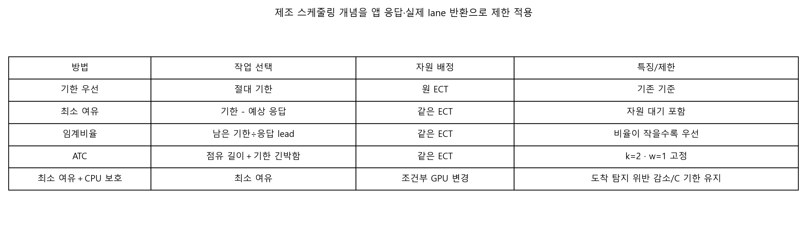
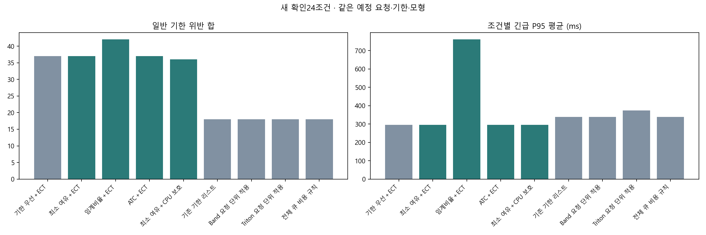
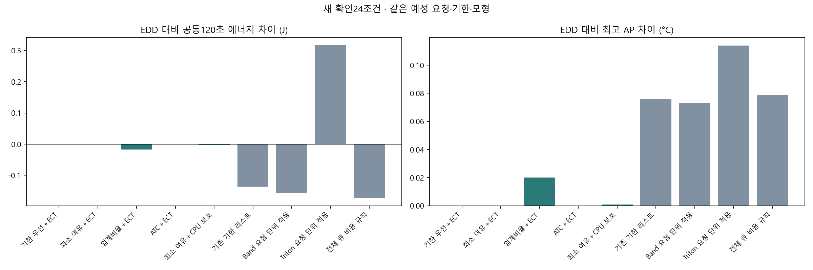
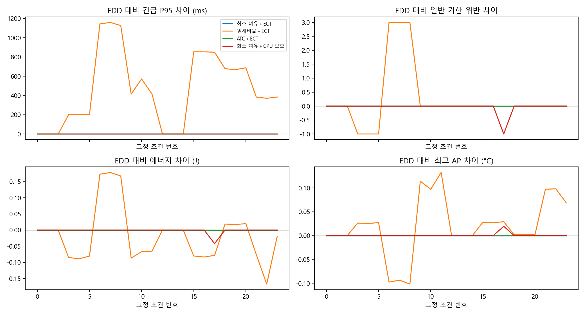
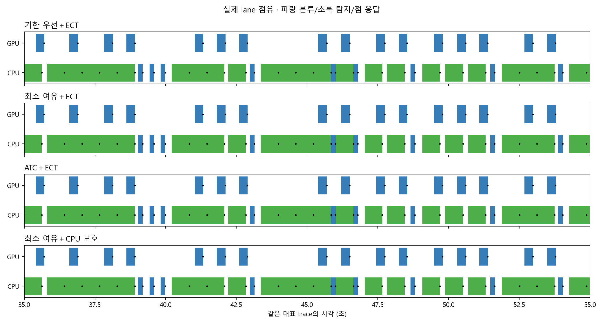
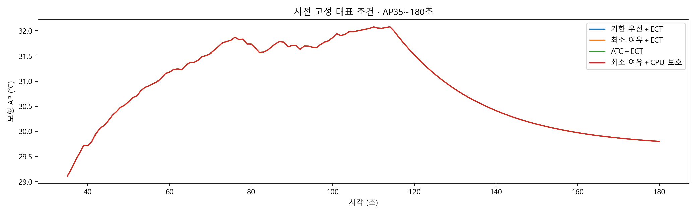

같은 실측 기반 계수·CPU/GPU·요청·기한. 학습/기기0회. 새 확인은2개 도착 seed의 작은 파일럿이며 실제 휴대폰 우위가 아니다. ATC k=2/w=1은 이번 고정 설정이다.
최종 기존 서비스/J/AP 판정 적격: 없음 · 기존 기준 유지.
결과·재현 · 전체 CSV · EDD 대비 모든 조건
세 전문가 토론·응답 경계 보완의 개발 결과 · 보완 후보24조건






필터
| 자료 | 정책 | 조건 | 부하 | 문맥 | 완료 | 긴급 위반 | 일반 위반 | 긴급 P95 ms | J120 | 최고 AP °C |
|---|---|---|---|---|---|---|---|---|---|---|
| 개발 | 기한 우선＋ECT | 0 | 낮은 부하 | mean | 24 | 0 | 0 | 156.1799 | 142.1235 | 30.2413 |
| 개발 | 기한 우선＋ECT | 1 | 낮은 부하 | short_context | 24 | 0 | 0 | 156.1799 | 142.1142 | 30.2403 |
| 개발 | 기한 우선＋ECT | 2 | 낮은 부하 | long_context | 24 | 0 | 0 | 156.1799 | 142.1322 | 30.2422 |
| 개발 | 기한 우선＋ECT | 3 | 큐 몰림 | mean | 24 | 0 | 3 | 294.0546 | 141.9505 | 30.4176 |
| 개발 | 기한 우선＋ECT | 4 | 큐 몰림 | short_context | 24 | 0 | 3 | 286.6085 | 141.9358 | 30.4138 |
| 개발 | 기한 우선＋ECT | 5 | 큐 몰림 | long_context | 24 | 0 | 3 | 301.5008 | 141.9647 | 30.4213 |
| 개발 | 기한 우선＋ECT | 6 | 순간 몰림 | mean | 24 | 0 | 2 | 397.5202 | 142.0344 | 30.4088 |
| 개발 | 기한 우선＋ECT | 7 | 순간 몰림 | short_context | 24 | 0 | 2 | 388.3506 | 142.0198 | 30.4054 |
| 개발 | 기한 우선＋ECT | 8 | 순간 몰림 | long_context | 24 | 0 | 3 | 406.6129 | 142.0485 | 30.4121 |
| 개발 | 기한 우선＋ECT | 9 | 지속 부하 | mean | 192 | 0 | 0 | 294.0546 | 183.6412 | 32.2943 |
| 개발 | 기한 우선＋ECT | 10 | 지속 부하 | short_context | 192 | 0 | 0 | 286.6085 | 183.4919 | 32.2820 |
| 개발 | 기한 우선＋ECT | 11 | 지속 부하 | long_context | 192 | 0 | 0 | 301.5008 | 183.7884 | 32.2980 |
| 개발 | 기한 우선＋ECT | 12 | 낮은 부하 | mean | 24 | 0 | 0 | 156.1799 | 142.1235 | 30.1922 |
| 개발 | 기한 우선＋ECT | 13 | 낮은 부하 | short_context | 24 | 0 | 0 | 156.1799 | 142.1142 | 30.1914 |
| 개발 | 기한 우선＋ECT | 14 | 낮은 부하 | long_context | 24 | 0 | 0 | 156.1799 | 142.1322 | 30.1930 |
| 개발 | 기한 우선＋ECT | 15 | 큐 몰림 | mean | 24 | 0 | 5 | 389.7899 | 142.0037 | 30.4098 |
| 개발 | 기한 우선＋ECT | 16 | 큐 몰림 | short_context | 24 | 0 | 5 | 374.6204 | 141.9888 | 30.4064 |
| 개발 | 기한 우선＋ECT | 17 | 큐 몰림 | long_context | 24 | 0 | 5 | 404.9595 | 142.0183 | 30.4131 |
| 개발 | 기한 우선＋ECT | 18 | 순간 몰림 | mean | 24 | 0 | 2 | 434.4608 | 141.9505 | 30.4234 |
| 개발 | 기한 우선＋ECT | 19 | 순간 몰림 | short_context | 24 | 0 | 2 | 419.2913 | 141.9358 | 30.4195 |
| 개발 | 기한 우선＋ECT | 20 | 순간 몰림 | long_context | 24 | 0 | 2 | 449.6303 | 141.9647 | 30.4273 |
| 개발 | 기한 우선＋ECT | 21 | 지속 부하 | mean | 192 | 0 | 0 | 294.0546 | 183.6075 | 32.0919 |
| 개발 | 기한 우선＋ECT | 22 | 지속 부하 | short_context | 192 | 0 | 0 | 286.6085 | 183.3431 | 32.1041 |
| 개발 | 기한 우선＋ECT | 23 | 지속 부하 | long_context | 192 | 0 | 0 | 301.5008 | 183.7354 | 32.1057 |
| 개발 | 최소 여유＋ECT | 0 | 낮은 부하 | mean | 24 | 0 | 0 | 156.1799 | 142.1235 | 30.2413 |
| 개발 | 최소 여유＋ECT | 1 | 낮은 부하 | short_context | 24 | 0 | 0 | 156.1799 | 142.1142 | 30.2403 |
| 개발 | 최소 여유＋ECT | 2 | 낮은 부하 | long_context | 24 | 0 | 0 | 156.1799 | 142.1322 | 30.2422 |
| 개발 | 최소 여유＋ECT | 3 | 큐 몰림 | mean | 24 | 0 | 3 | 294.0546 | 141.9505 | 30.4176 |
| 개발 | 최소 여유＋ECT | 4 | 큐 몰림 | short_context | 24 | 0 | 3 | 286.6085 | 141.9358 | 30.4138 |
| 개발 | 최소 여유＋ECT | 5 | 큐 몰림 | long_context | 24 | 0 | 3 | 301.5008 | 141.9647 | 30.4213 |
| 개발 | 최소 여유＋ECT | 6 | 순간 몰림 | mean | 24 | 0 | 2 | 397.5202 | 142.0344 | 30.4088 |
| 개발 | 최소 여유＋ECT | 7 | 순간 몰림 | short_context | 24 | 0 | 2 | 388.3506 | 142.0198 | 30.4054 |
| 개발 | 최소 여유＋ECT | 8 | 순간 몰림 | long_context | 24 | 0 | 3 | 406.6129 | 142.0485 | 30.4121 |
| 개발 | 최소 여유＋ECT | 9 | 지속 부하 | mean | 192 | 0 | 0 | 294.0546 | 183.6412 | 32.2943 |
| 개발 | 최소 여유＋ECT | 10 | 지속 부하 | short_context | 192 | 0 | 0 | 286.6085 | 183.4919 | 32.2820 |
| 개발 | 최소 여유＋ECT | 11 | 지속 부하 | long_context | 192 | 0 | 0 | 301.5008 | 183.7884 | 32.2980 |
| 개발 | 최소 여유＋ECT | 12 | 낮은 부하 | mean | 24 | 0 | 0 | 156.1799 | 142.1235 | 30.1922 |
| 개발 | 최소 여유＋ECT | 13 | 낮은 부하 | short_context | 24 | 0 | 0 | 156.1799 | 142.1142 | 30.1914 |
| 개발 | 최소 여유＋ECT | 14 | 낮은 부하 | long_context | 24 | 0 | 0 | 156.1799 | 142.1322 | 30.1930 |
| 개발 | 최소 여유＋ECT | 15 | 큐 몰림 | mean | 24 | 0 | 5 | 389.7899 | 142.0037 | 30.4098 |
| 개발 | 최소 여유＋ECT | 16 | 큐 몰림 | short_context | 24 | 0 | 5 | 374.6204 | 141.9888 | 30.4064 |
| 개발 | 최소 여유＋ECT | 17 | 큐 몰림 | long_context | 24 | 0 | 5 | 404.9595 | 142.0183 | 30.4131 |
| 개발 | 최소 여유＋ECT | 18 | 순간 몰림 | mean | 24 | 0 | 2 | 434.4608 | 141.9505 | 30.4234 |
| 개발 | 최소 여유＋ECT | 19 | 순간 몰림 | short_context | 24 | 0 | 2 | 419.2913 | 141.9358 | 30.4195 |
| 개발 | 최소 여유＋ECT | 20 | 순간 몰림 | long_context | 24 | 0 | 2 | 449.6303 | 141.9647 | 30.4273 |
| 개발 | 최소 여유＋ECT | 21 | 지속 부하 | mean | 192 | 0 | 0 | 294.0546 | 183.6075 | 32.0919 |
| 개발 | 최소 여유＋ECT | 22 | 지속 부하 | short_context | 192 | 0 | 0 | 286.6085 | 183.3431 | 32.1041 |
| 개발 | 최소 여유＋ECT | 23 | 지속 부하 | long_context | 192 | 0 | 0 | 301.5008 | 183.7354 | 32.1057 |
| 개발 | 임계비율＋ECT | 0 | 낮은 부하 | mean | 24 | 0 | 0 | 156.1799 | 142.1235 | 30.2413 |
| 개발 | 임계비율＋ECT | 1 | 낮은 부하 | short_context | 24 | 0 | 0 | 156.1799 | 142.1142 | 30.2403 |
| 개발 | 임계비율＋ECT | 2 | 낮은 부하 | long_context | 24 | 0 | 0 | 156.1799 | 142.1322 | 30.2422 |
| 개발 | 임계비율＋ECT | 3 | 큐 몰림 | mean | 24 | 0 | 2 | 711.6656 | 141.8640 | 30.4720 |
| 개발 | 임계비율＋ECT | 4 | 큐 몰림 | short_context | 24 | 0 | 2 | 711.7617 | 141.8912 | 30.4290 |
| 개발 | 임계비율＋ECT | 5 | 큐 몰림 | long_context | 24 | 0 | 2 | 719.1117 | 141.8809 | 30.4756 |
| 개발 | 임계비율＋ECT | 6 | 순간 몰림 | mean | 24 | 0 | 4 | 1213.3259 | 142.0802 | 30.3704 |
| 개발 | 임계비율＋ECT | 7 | 순간 몰림 | short_context | 24 | 0 | 4 | 1207.5408 | 142.0696 | 30.3699 |
| 개발 | 임계비율＋ECT | 8 | 순간 몰림 | long_context | 24 | 0 | 4 | 1218.8030 | 142.0903 | 30.3710 |
| 개발 | 임계비율＋ECT | 9 | 지속 부하 | mean | 192 | 0 | 0 | 678.9554 | 183.4939 | 32.3443 |
| 개발 | 임계비율＋ECT | 10 | 지속 부하 | short_context | 192 | 0 | 0 | 674.5328 | 183.3267 | 32.3217 |
| 개발 | 임계비율＋ECT | 11 | 지속 부하 | long_context | 192 | 0 | 0 | 688.0481 | 183.6559 | 32.3573 |
| 개발 | 임계비율＋ECT | 12 | 낮은 부하 | mean | 24 | 0 | 0 | 156.1799 | 142.1235 | 30.1922 |
| 개발 | 임계비율＋ECT | 13 | 낮은 부하 | short_context | 24 | 0 | 0 | 156.1799 | 142.1142 | 30.1914 |
| 개발 | 임계비율＋ECT | 14 | 낮은 부하 | long_context | 24 | 0 | 0 | 156.1799 | 142.1322 | 30.1930 |
| 개발 | 임계비율＋ECT | 15 | 큐 몰림 | mean | 24 | 0 | 4 | 1294.5773 | 141.9498 | 30.4396 |
| 개발 | 임계비율＋ECT | 16 | 큐 몰림 | short_context | 24 | 0 | 4 | 1327.9843 | 141.9410 | 30.4206 |
| 개발 | 임계비율＋ECT | 17 | 큐 몰림 | long_context | 24 | 0 | 4 | 1303.3928 | 141.9661 | 30.4442 |
| 개발 | 임계비율＋ECT | 18 | 순간 몰림 | mean | 24 | 0 | 2 | 1461.7270 | 141.9937 | 30.4004 |
| 개발 | 임계비율＋ECT | 19 | 순간 몰림 | short_context | 24 | 0 | 2 | 1455.2188 | 141.9804 | 30.3971 |
| 개발 | 임계비율＋ECT | 20 | 순간 몰림 | long_context | 24 | 0 | 2 | 1467.8888 | 142.0066 | 30.4036 |
| 개발 | 임계비율＋ECT | 21 | 지속 부하 | mean | 192 | 0 | 0 | 687.8253 | 183.2847 | 32.1718 |
| 개발 | 임계비율＋ECT | 22 | 지속 부하 | short_context | 192 | 0 | 0 | 680.4690 | 183.1411 | 32.1557 |
| 개발 | 임계비율＋ECT | 23 | 지속 부하 | long_context | 192 | 0 | 0 | 692.0534 | 183.4625 | 32.1868 |
| 개발 | ATC＋ECT | 0 | 낮은 부하 | mean | 24 | 0 | 0 | 156.1799 | 142.1235 | 30.2413 |
| 개발 | ATC＋ECT | 1 | 낮은 부하 | short_context | 24 | 0 | 0 | 156.1799 | 142.1142 | 30.2403 |
| 개발 | ATC＋ECT | 2 | 낮은 부하 | long_context | 24 | 0 | 0 | 156.1799 | 142.1322 | 30.2422 |
| 개발 | ATC＋ECT | 3 | 큐 몰림 | mean | 24 | 0 | 3 | 294.0546 | 141.9505 | 30.4176 |
| 개발 | ATC＋ECT | 4 | 큐 몰림 | short_context | 24 | 0 | 3 | 286.6085 | 141.9358 | 30.4138 |
| 개발 | ATC＋ECT | 5 | 큐 몰림 | long_context | 24 | 0 | 3 | 301.5008 | 141.9647 | 30.4213 |
| 개발 | ATC＋ECT | 6 | 순간 몰림 | mean | 24 | 0 | 2 | 397.5202 | 142.0344 | 30.4088 |
| 개발 | ATC＋ECT | 7 | 순간 몰림 | short_context | 24 | 0 | 2 | 388.3506 | 142.0198 | 30.4054 |
| 개발 | ATC＋ECT | 8 | 순간 몰림 | long_context | 24 | 0 | 3 | 406.6129 | 142.0485 | 30.4121 |
| 개발 | ATC＋ECT | 9 | 지속 부하 | mean | 192 | 0 | 0 | 294.0546 | 183.6412 | 32.2943 |
| 개발 | ATC＋ECT | 10 | 지속 부하 | short_context | 192 | 0 | 0 | 286.6085 | 183.4919 | 32.2820 |
| 개발 | ATC＋ECT | 11 | 지속 부하 | long_context | 192 | 0 | 0 | 301.5008 | 183.7884 | 32.2980 |
| 개발 | ATC＋ECT | 12 | 낮은 부하 | mean | 24 | 0 | 0 | 156.1799 | 142.1235 | 30.1922 |
| 개발 | ATC＋ECT | 13 | 낮은 부하 | short_context | 24 | 0 | 0 | 156.1799 | 142.1142 | 30.1914 |
| 개발 | ATC＋ECT | 14 | 낮은 부하 | long_context | 24 | 0 | 0 | 156.1799 | 142.1322 | 30.1930 |
| 개발 | ATC＋ECT | 15 | 큐 몰림 | mean | 24 | 0 | 5 | 389.7899 | 142.0037 | 30.4098 |
| 개발 | ATC＋ECT | 16 | 큐 몰림 | short_context | 24 | 0 | 5 | 374.6204 | 141.9888 | 30.4064 |
| 개발 | ATC＋ECT | 17 | 큐 몰림 | long_context | 24 | 0 | 5 | 404.9595 | 142.0183 | 30.4131 |
| 개발 | ATC＋ECT | 18 | 순간 몰림 | mean | 24 | 0 | 2 | 434.4608 | 141.9505 | 30.4234 |
| 개발 | ATC＋ECT | 19 | 순간 몰림 | short_context | 24 | 0 | 2 | 419.2913 | 141.9358 | 30.4195 |
| 개발 | ATC＋ECT | 20 | 순간 몰림 | long_context | 24 | 0 | 2 | 449.6303 | 141.9647 | 30.4273 |
| 개발 | ATC＋ECT | 21 | 지속 부하 | mean | 192 | 0 | 0 | 294.0546 | 183.6075 | 32.0919 |
| 개발 | ATC＋ECT | 22 | 지속 부하 | short_context | 192 | 0 | 0 | 286.6085 | 183.3431 | 32.1041 |
| 개발 | ATC＋ECT | 23 | 지속 부하 | long_context | 192 | 0 | 0 | 301.5008 | 183.7354 | 32.1057 |
| 개발 | 최소 여유＋CPU 보호 | 0 | 낮은 부하 | mean | 24 | 0 | 0 | 156.1799 | 142.1235 | 30.2413 |
| 개발 | 최소 여유＋CPU 보호 | 1 | 낮은 부하 | short_context | 24 | 0 | 0 | 156.1799 | 142.1142 | 30.2403 |
| 개발 | 최소 여유＋CPU 보호 | 2 | 낮은 부하 | long_context | 24 | 0 | 0 | 156.1799 | 142.1322 | 30.2422 |
| 개발 | 최소 여유＋CPU 보호 | 3 | 큐 몰림 | mean | 24 | 0 | 3 | 294.0546 | 141.9505 | 30.4176 |
| 개발 | 최소 여유＋CPU 보호 | 4 | 큐 몰림 | short_context | 24 | 0 | 3 | 286.6085 | 141.9358 | 30.4138 |
| 개발 | 최소 여유＋CPU 보호 | 5 | 큐 몰림 | long_context | 24 | 0 | 3 | 301.5008 | 141.9647 | 30.4213 |
| 개발 | 최소 여유＋CPU 보호 | 6 | 순간 몰림 | mean | 24 | 0 | 2 | 397.5202 | 142.0344 | 30.4088 |
| 개발 | 최소 여유＋CPU 보호 | 7 | 순간 몰림 | short_context | 24 | 0 | 2 | 388.3506 | 142.0198 | 30.4054 |
| 개발 | 최소 여유＋CPU 보호 | 8 | 순간 몰림 | long_context | 24 | 0 | 3 | 406.6129 | 142.0485 | 30.4121 |
| 개발 | 최소 여유＋CPU 보호 | 9 | 지속 부하 | mean | 192 | 0 | 0 | 294.0546 | 183.6412 | 32.2943 |
| 개발 | 최소 여유＋CPU 보호 | 10 | 지속 부하 | short_context | 192 | 0 | 0 | 286.6085 | 183.4919 | 32.2820 |
| 개발 | 최소 여유＋CPU 보호 | 11 | 지속 부하 | long_context | 192 | 0 | 0 | 301.5008 | 183.7884 | 32.2980 |
| 개발 | 최소 여유＋CPU 보호 | 12 | 낮은 부하 | mean | 24 | 0 | 0 | 156.1799 | 142.1235 | 30.1922 |
| 개발 | 최소 여유＋CPU 보호 | 13 | 낮은 부하 | short_context | 24 | 0 | 0 | 156.1799 | 142.1142 | 30.1914 |
| 개발 | 최소 여유＋CPU 보호 | 14 | 낮은 부하 | long_context | 24 | 0 | 0 | 156.1799 | 142.1322 | 30.1930 |
| 개발 | 최소 여유＋CPU 보호 | 15 | 큐 몰림 | mean | 24 | 0 | 4 | 389.7899 | 141.9605 | 30.4286 |
| 개발 | 최소 여유＋CPU 보호 | 16 | 큐 몰림 | short_context | 24 | 0 | 4 | 374.6204 | 141.9442 | 30.4245 |
| 개발 | 최소 여유＋CPU 보호 | 17 | 큐 몰림 | long_context | 24 | 0 | 4 | 404.9595 | 141.9764 | 30.4325 |
| 개발 | 최소 여유＋CPU 보호 | 18 | 순간 몰림 | mean | 24 | 0 | 2 | 434.4608 | 141.9505 | 30.4234 |
| 개발 | 최소 여유＋CPU 보호 | 19 | 순간 몰림 | short_context | 24 | 0 | 2 | 419.2913 | 141.9358 | 30.4195 |
| 개발 | 최소 여유＋CPU 보호 | 20 | 순간 몰림 | long_context | 24 | 0 | 2 | 449.6303 | 141.9647 | 30.4273 |
| 개발 | 최소 여유＋CPU 보호 | 21 | 지속 부하 | mean | 192 | 0 | 0 | 294.0546 | 183.6075 | 32.0919 |
| 개발 | 최소 여유＋CPU 보호 | 22 | 지속 부하 | short_context | 192 | 0 | 0 | 286.6085 | 183.3431 | 32.1041 |
| 개발 | 최소 여유＋CPU 보호 | 23 | 지속 부하 | long_context | 192 | 0 | 0 | 301.5008 | 183.7354 | 32.1057 |
| 개발 | 기존 기한 리스트 | 0 | 낮은 부하 | mean | 24 | 0 | 0 | 156.1799 | 142.1235 | 30.2413 |
| 개발 | 기존 기한 리스트 | 1 | 낮은 부하 | short_context | 24 | 0 | 0 | 156.1799 | 142.1142 | 30.2403 |
| 개발 | 기존 기한 리스트 | 2 | 낮은 부하 | long_context | 24 | 0 | 0 | 156.1799 | 142.1322 | 30.2422 |
| 개발 | 기존 기한 리스트 | 3 | 큐 몰림 | mean | 24 | 0 | 2 | 294.0546 | 141.8640 | 30.4709 |
| 개발 | 기존 기한 리스트 | 4 | 큐 몰림 | short_context | 24 | 0 | 2 | 286.6085 | 141.8466 | 30.4673 |
| 개발 | 기존 기한 리스트 | 5 | 큐 몰림 | long_context | 24 | 0 | 2 | 301.5008 | 141.8809 | 30.4745 |
| 개발 | 기존 기한 리스트 | 6 | 순간 몰림 | mean | 24 | 0 | 1 | 519.0929 | 141.8640 | 30.4801 |
| 개발 | 기존 기한 리스트 | 7 | 순간 몰림 | short_context | 24 | 0 | 1 | 503.9234 | 141.8466 | 30.4763 |
| 개발 | 기존 기한 리스트 | 8 | 순간 몰림 | long_context | 24 | 0 | 1 | 534.2625 | 141.8809 | 30.4839 |
| 개발 | 기존 기한 리스트 | 9 | 지속 부하 | mean | 192 | 0 | 0 | 294.0546 | 183.3386 | 32.4403 |
| 개발 | 기존 기한 리스트 | 10 | 지속 부하 | short_context | 192 | 0 | 0 | 286.6085 | 183.1656 | 32.4252 |
| 개발 | 기존 기한 리스트 | 11 | 지속 부하 | long_context | 192 | 0 | 0 | 301.5008 | 183.5096 | 32.4552 |
| 개발 | 기존 기한 리스트 | 12 | 낮은 부하 | mean | 24 | 0 | 0 | 156.1799 | 142.1235 | 30.1922 |
| 개발 | 기존 기한 리스트 | 13 | 낮은 부하 | short_context | 24 | 0 | 0 | 156.1799 | 142.1142 | 30.1914 |
| 개발 | 기존 기한 리스트 | 14 | 낮은 부하 | long_context | 24 | 0 | 0 | 156.1799 | 142.1322 | 30.1930 |
| 개발 | 기존 기한 리스트 | 15 | 큐 몰림 | mean | 24 | 0 | 2 | 394.1253 | 141.8640 | 30.4792 |
| 개발 | 기존 기한 리스트 | 16 | 큐 몰림 | short_context | 24 | 0 | 2 | 378.9557 | 141.8466 | 30.4754 |
| 개발 | 기존 기한 리스트 | 17 | 큐 몰림 | long_context | 24 | 0 | 2 | 409.2948 | 141.8809 | 30.4830 |
| 개발 | 기존 기한 리스트 | 18 | 순간 몰림 | mean | 24 | 0 | 1 | 517.2741 | 141.8640 | 30.4770 |
| 개발 | 기존 기한 리스트 | 19 | 순간 몰림 | short_context | 24 | 0 | 1 | 502.1045 | 141.8466 | 30.4733 |
| 개발 | 기존 기한 리스트 | 20 | 순간 몰림 | long_context | 24 | 0 | 1 | 532.4436 | 141.8809 | 30.4808 |
| 개발 | 기존 기한 리스트 | 21 | 지속 부하 | mean | 192 | 0 | 0 | 294.0546 | 183.4158 | 32.3093 |
| 개발 | 기존 기한 리스트 | 22 | 지속 부하 | short_context | 192 | 0 | 0 | 286.6085 | 183.1951 | 32.2862 |
| 개발 | 기존 기한 리스트 | 23 | 지속 부하 | long_context | 192 | 0 | 0 | 301.5008 | 183.5859 | 32.3269 |
| 개발 | Band 요청 단위 적용 | 0 | 낮은 부하 | mean | 24 | 0 | 0 | 156.1799 | 142.1235 | 30.2413 |
| 개발 | Band 요청 단위 적용 | 1 | 낮은 부하 | short_context | 24 | 0 | 0 | 156.1799 | 142.1142 | 30.2403 |
| 개발 | Band 요청 단위 적용 | 2 | 낮은 부하 | long_context | 24 | 0 | 0 | 156.1799 | 142.1322 | 30.2422 |
| 개발 | Band 요청 단위 적용 | 3 | 큐 몰림 | mean | 24 | 0 | 2 | 294.0546 | 141.8640 | 30.4709 |
| 개발 | Band 요청 단위 적용 | 4 | 큐 몰림 | short_context | 24 | 0 | 2 | 286.6085 | 141.8466 | 30.4673 |
| 개발 | Band 요청 단위 적용 | 5 | 큐 몰림 | long_context | 24 | 0 | 2 | 301.5008 | 141.8809 | 30.4745 |
| 개발 | Band 요청 단위 적용 | 6 | 순간 몰림 | mean | 24 | 0 | 1 | 519.0929 | 141.8640 | 30.4801 |
| 개발 | Band 요청 단위 적용 | 7 | 순간 몰림 | short_context | 24 | 0 | 1 | 503.9234 | 141.8466 | 30.4763 |
| 개발 | Band 요청 단위 적용 | 8 | 순간 몰림 | long_context | 24 | 0 | 1 | 534.2625 | 141.8809 | 30.4839 |
| 개발 | Band 요청 단위 적용 | 9 | 지속 부하 | mean | 192 | 0 | 0 | 294.0546 | 183.2813 | 32.4303 |
| 개발 | Band 요청 단위 적용 | 10 | 지속 부하 | short_context | 192 | 0 | 0 | 286.6085 | 183.1152 | 32.4155 |
| 개발 | Band 요청 단위 적용 | 11 | 지속 부하 | long_context | 192 | 0 | 0 | 301.5008 | 183.4452 | 32.4449 |
| 개발 | Band 요청 단위 적용 | 12 | 낮은 부하 | mean | 24 | 0 | 0 | 156.1799 | 142.1235 | 30.1922 |
| 개발 | Band 요청 단위 적용 | 13 | 낮은 부하 | short_context | 24 | 0 | 0 | 156.1799 | 142.1142 | 30.1914 |
| 개발 | Band 요청 단위 적용 | 14 | 낮은 부하 | long_context | 24 | 0 | 0 | 156.1799 | 142.1322 | 30.1930 |
| 개발 | Band 요청 단위 적용 | 15 | 큐 몰림 | mean | 24 | 0 | 2 | 394.1253 | 141.8640 | 30.4792 |
| 개발 | Band 요청 단위 적용 | 16 | 큐 몰림 | short_context | 24 | 0 | 2 | 378.9557 | 141.8466 | 30.4754 |
| 개발 | Band 요청 단위 적용 | 17 | 큐 몰림 | long_context | 24 | 0 | 2 | 409.2948 | 141.8809 | 30.4830 |
| 개발 | Band 요청 단위 적용 | 18 | 순간 몰림 | mean | 24 | 0 | 1 | 517.2741 | 141.8640 | 30.4770 |
| 개발 | Band 요청 단위 적용 | 19 | 순간 몰림 | short_context | 24 | 0 | 1 | 502.1045 | 141.8466 | 30.4733 |
| 개발 | Band 요청 단위 적용 | 20 | 순간 몰림 | long_context | 24 | 0 | 1 | 532.4436 | 141.8809 | 30.4808 |
| 개발 | Band 요청 단위 적용 | 21 | 지속 부하 | mean | 192 | 0 | 0 | 294.0546 | 183.1673 | 32.2694 |
| 개발 | Band 요청 단위 적용 | 22 | 지속 부하 | short_context | 192 | 0 | 0 | 286.6085 | 183.0143 | 32.2535 |
| 개발 | Band 요청 단위 적용 | 23 | 지속 부하 | long_context | 192 | 0 | 0 | 301.5008 | 183.3181 | 32.2853 |
| 개발 | Triton 요청 단위 적용 | 0 | 낮은 부하 | mean | 24 | 0 | 0 | 294.0546 | 142.4090 | 30.2793 |
| 개발 | Triton 요청 단위 적용 | 1 | 낮은 부하 | short_context | 24 | 0 | 0 | 286.6085 | 142.3778 | 30.2772 |
| 개발 | Triton 요청 단위 적용 | 2 | 낮은 부하 | long_context | 24 | 0 | 0 | 301.5008 | 142.4397 | 30.2812 |
| 개발 | Triton 요청 단위 적용 | 3 | 큐 몰림 | mean | 24 | 0 | 2 | 294.0546 | 141.8640 | 30.4709 |
| 개발 | Triton 요청 단위 적용 | 4 | 큐 몰림 | short_context | 24 | 0 | 2 | 286.6085 | 141.8466 | 30.4673 |
| 개발 | Triton 요청 단위 적용 | 5 | 큐 몰림 | long_context | 24 | 0 | 2 | 301.5008 | 141.8809 | 30.4745 |
| 개발 | Triton 요청 단위 적용 | 6 | 순간 몰림 | mean | 24 | 0 | 1 | 519.0929 | 141.8640 | 30.4801 |
| 개발 | Triton 요청 단위 적용 | 7 | 순간 몰림 | short_context | 24 | 0 | 1 | 503.9234 | 141.8466 | 30.4763 |
| 개발 | Triton 요청 단위 적용 | 8 | 순간 몰림 | long_context | 24 | 0 | 1 | 534.2625 | 141.8809 | 30.4839 |
| 개발 | Triton 요청 단위 적용 | 9 | 지속 부하 | mean | 192 | 0 | 0 | 294.0546 | 185.0043 | 32.5254 |
| 개발 | Triton 요청 단위 적용 | 10 | 지속 부하 | short_context | 192 | 0 | 0 | 286.6085 | 184.7035 | 32.5079 |
| 개발 | Triton 요청 단위 적용 | 11 | 지속 부하 | long_context | 192 | 0 | 0 | 301.5008 | 185.3031 | 32.5427 |
| 개발 | Triton 요청 단위 적용 | 12 | 낮은 부하 | mean | 24 | 0 | 0 | 294.0546 | 142.4090 | 30.2433 |
| 개발 | Triton 요청 단위 적용 | 13 | 낮은 부하 | short_context | 24 | 0 | 0 | 286.6085 | 142.3778 | 30.2410 |
| 개발 | Triton 요청 단위 적용 | 14 | 낮은 부하 | long_context | 24 | 0 | 0 | 301.5008 | 142.4397 | 30.2455 |
| 개발 | Triton 요청 단위 적용 | 15 | 큐 몰림 | mean | 24 | 0 | 2 | 394.1253 | 141.8640 | 30.4792 |
| 개발 | Triton 요청 단위 적용 | 16 | 큐 몰림 | short_context | 24 | 0 | 2 | 378.9557 | 141.8466 | 30.4754 |
| 개발 | Triton 요청 단위 적용 | 17 | 큐 몰림 | long_context | 24 | 0 | 2 | 409.2948 | 141.8809 | 30.4830 |
| 개발 | Triton 요청 단위 적용 | 18 | 순간 몰림 | mean | 24 | 0 | 1 | 517.2741 | 141.8640 | 30.4770 |
| 개발 | Triton 요청 단위 적용 | 19 | 순간 몰림 | short_context | 24 | 0 | 1 | 502.1045 | 141.8466 | 30.4733 |
| 개발 | Triton 요청 단위 적용 | 20 | 순간 몰림 | long_context | 24 | 0 | 1 | 532.4436 | 141.8809 | 30.4808 |
| 개발 | Triton 요청 단위 적용 | 21 | 지속 부하 | mean | 192 | 0 | 0 | 294.0546 | 184.7960 | 32.3697 |
| 개발 | Triton 요청 단위 적용 | 22 | 지속 부하 | short_context | 192 | 0 | 0 | 286.6085 | 184.5133 | 32.3508 |
| 개발 | Triton 요청 단위 적용 | 23 | 지속 부하 | long_context | 192 | 0 | 0 | 301.5008 | 185.0719 | 32.3889 |
| 개발 | 전체 큐 비용 규칙 | 0 | 낮은 부하 | mean | 24 | 0 | 0 | 156.1799 | 142.1235 | 30.2438 |
| 개발 | 전체 큐 비용 규칙 | 1 | 낮은 부하 | short_context | 24 | 0 | 0 | 156.1799 | 142.1142 | 30.2428 |
| 개발 | 전체 큐 비용 규칙 | 2 | 낮은 부하 | long_context | 24 | 0 | 0 | 156.1799 | 142.1322 | 30.2447 |
| 개발 | 전체 큐 비용 규칙 | 3 | 큐 몰림 | mean | 24 | 0 | 2 | 294.0546 | 141.8640 | 30.4709 |
| 개발 | 전체 큐 비용 규칙 | 4 | 큐 몰림 | short_context | 24 | 0 | 2 | 286.6085 | 141.8466 | 30.4673 |
| 개발 | 전체 큐 비용 규칙 | 5 | 큐 몰림 | long_context | 24 | 0 | 2 | 301.5008 | 141.8809 | 30.4745 |
| 개발 | 전체 큐 비용 규칙 | 6 | 순간 몰림 | mean | 24 | 0 | 1 | 519.0929 | 141.8640 | 30.4801 |
| 개발 | 전체 큐 비용 규칙 | 7 | 순간 몰림 | short_context | 24 | 0 | 1 | 503.9234 | 141.8466 | 30.4763 |
| 개발 | 전체 큐 비용 규칙 | 8 | 순간 몰림 | long_context | 24 | 0 | 1 | 534.2625 | 141.8809 | 30.4839 |
| 개발 | 전체 큐 비용 규칙 | 9 | 지속 부하 | mean | 192 | 0 | 0 | 294.0546 | 183.2602 | 32.4551 |
| 개발 | 전체 큐 비용 규칙 | 10 | 지속 부하 | short_context | 192 | 0 | 0 | 286.6085 | 183.0963 | 32.4394 |
| 개발 | 전체 큐 비용 규칙 | 11 | 지속 부하 | long_context | 192 | 0 | 0 | 301.5008 | 183.4679 | 32.4699 |
| 개발 | 전체 큐 비용 규칙 | 12 | 낮은 부하 | mean | 24 | 0 | 0 | 156.1799 | 142.1235 | 30.1856 |
| 개발 | 전체 큐 비용 규칙 | 13 | 낮은 부하 | short_context | 24 | 0 | 0 | 156.1799 | 142.1142 | 30.1847 |
| 개발 | 전체 큐 비용 규칙 | 14 | 낮은 부하 | long_context | 24 | 0 | 0 | 156.1799 | 142.1322 | 30.1865 |
| 개발 | 전체 큐 비용 규칙 | 15 | 큐 몰림 | mean | 24 | 0 | 2 | 394.1253 | 141.8640 | 30.4792 |
| 개발 | 전체 큐 비용 규칙 | 16 | 큐 몰림 | short_context | 24 | 0 | 2 | 378.9557 | 141.8466 | 30.4754 |
| 개발 | 전체 큐 비용 규칙 | 17 | 큐 몰림 | long_context | 24 | 0 | 2 | 409.2948 | 141.8809 | 30.4830 |
| 개발 | 전체 큐 비용 규칙 | 18 | 순간 몰림 | mean | 24 | 0 | 1 | 517.2741 | 141.8640 | 30.4770 |
| 개발 | 전체 큐 비용 규칙 | 19 | 순간 몰림 | short_context | 24 | 0 | 1 | 502.1045 | 141.8466 | 30.4733 |
| 개발 | 전체 큐 비용 규칙 | 20 | 순간 몰림 | long_context | 24 | 0 | 1 | 532.4436 | 141.8809 | 30.4808 |
| 개발 | 전체 큐 비용 규칙 | 21 | 지속 부하 | mean | 192 | 0 | 0 | 294.0546 | 183.3059 | 32.3246 |
| 개발 | 전체 큐 비용 규칙 | 22 | 지속 부하 | short_context | 192 | 0 | 0 | 286.6085 | 183.1303 | 32.3068 |
| 개발 | 전체 큐 비용 규칙 | 23 | 지속 부하 | long_context | 192 | 0 | 0 | 301.5008 | 183.4795 | 32.3423 |
| 새 확인 | 기한 우선＋ECT | 0 | 낮은 부하 | mean | 24 | 0 | 0 | 156.1799 | 142.1235 | 30.2082 |
| 새 확인 | 기한 우선＋ECT | 1 | 낮은 부하 | short_context | 24 | 0 | 0 | 156.1799 | 142.1142 | 30.2072 |
| 새 확인 | 기한 우선＋ECT | 2 | 낮은 부하 | long_context | 24 | 0 | 0 | 156.1799 | 142.1322 | 30.2091 |
| 새 확인 | 기한 우선＋ECT | 3 | 큐 몰림 | mean | 24 | 0 | 4 | 294.0546 | 142.0370 | 30.3969 |
| 새 확인 | 기한 우선＋ECT | 4 | 큐 몰림 | short_context | 24 | 0 | 4 | 286.6085 | 142.0250 | 30.3942 |
| 새 확인 | 기한 우선＋ECT | 5 | 큐 몰림 | long_context | 24 | 0 | 4 | 301.5008 | 142.0485 | 30.3995 |
| 새 확인 | 기한 우선＋ECT | 6 | 순간 몰림 | mean | 24 | 0 | 3 | 580.9739 | 141.9505 | 30.4304 |
| 새 확인 | 기한 우선＋ECT | 7 | 순간 몰림 | short_context | 24 | 0 | 3 | 558.0810 | 141.9358 | 30.4263 |
| 새 확인 | 기한 우선＋ECT | 8 | 순간 몰림 | long_context | 24 | 0 | 3 | 603.8668 | 141.9647 | 30.4345 |
| 새 확인 | 기한 우선＋ECT | 9 | 지속 부하 | mean | 192 | 0 | 0 | 294.0546 | 183.7823 | 32.0792 |
| 새 확인 | 기한 우선＋ECT | 10 | 지속 부하 | short_context | 192 | 0 | 0 | 286.6085 | 183.5898 | 32.0746 |
| 새 확인 | 기한 우선＋ECT | 11 | 지속 부하 | long_context | 192 | 0 | 0 | 301.5008 | 183.9403 | 32.0883 |
| 새 확인 | 기한 우선＋ECT | 12 | 낮은 부하 | mean | 24 | 0 | 0 | 156.1799 | 142.1235 | 30.1986 |
| 새 확인 | 기한 우선＋ECT | 13 | 낮은 부하 | short_context | 24 | 0 | 0 | 156.1799 | 142.1142 | 30.1977 |
| 새 확인 | 기한 우선＋ECT | 14 | 낮은 부하 | long_context | 24 | 0 | 0 | 156.1799 | 142.1322 | 30.1995 |
| 새 확인 | 기한 우선＋ECT | 15 | 큐 몰림 | mean | 24 | 0 | 3 | 294.0546 | 141.9937 | 30.4095 |
| 새 확인 | 기한 우선＋ECT | 16 | 큐 몰림 | short_context | 24 | 0 | 3 | 286.6085 | 141.9804 | 30.4061 |
| 새 확인 | 기한 우선＋ECT | 17 | 큐 몰림 | long_context | 24 | 0 | 4 | 301.5008 | 142.0066 | 30.4128 |
| 새 확인 | 기한 우선＋ECT | 18 | 순간 몰림 | mean | 24 | 0 | 2 | 294.0546 | 141.9505 | 30.4217 |
| 새 확인 | 기한 우선＋ECT | 19 | 순간 몰림 | short_context | 24 | 0 | 2 | 286.6085 | 141.9358 | 30.4178 |
| 새 확인 | 기한 우선＋ECT | 20 | 순간 몰림 | long_context | 24 | 0 | 2 | 301.5008 | 141.9647 | 30.4255 |
| 새 확인 | 기한 우선＋ECT | 21 | 지속 부하 | mean | 192 | 0 | 0 | 294.0546 | 183.6522 | 32.2513 |
| 새 확인 | 기한 우선＋ECT | 22 | 지속 부하 | short_context | 192 | 0 | 0 | 286.6085 | 183.5157 | 32.2446 |
| 새 확인 | 기한 우선＋ECT | 23 | 지속 부하 | long_context | 192 | 0 | 0 | 301.5008 | 183.7626 | 32.2947 |
| 새 확인 | 최소 여유＋ECT | 0 | 낮은 부하 | mean | 24 | 0 | 0 | 156.1799 | 142.1235 | 30.2082 |
| 새 확인 | 최소 여유＋ECT | 1 | 낮은 부하 | short_context | 24 | 0 | 0 | 156.1799 | 142.1142 | 30.2072 |
| 새 확인 | 최소 여유＋ECT | 2 | 낮은 부하 | long_context | 24 | 0 | 0 | 156.1799 | 142.1322 | 30.2091 |
| 새 확인 | 최소 여유＋ECT | 3 | 큐 몰림 | mean | 24 | 0 | 4 | 294.0546 | 142.0370 | 30.3969 |
| 새 확인 | 최소 여유＋ECT | 4 | 큐 몰림 | short_context | 24 | 0 | 4 | 286.6085 | 142.0250 | 30.3942 |
| 새 확인 | 최소 여유＋ECT | 5 | 큐 몰림 | long_context | 24 | 0 | 4 | 301.5008 | 142.0485 | 30.3995 |
| 새 확인 | 최소 여유＋ECT | 6 | 순간 몰림 | mean | 24 | 0 | 3 | 580.9739 | 141.9505 | 30.4304 |
| 새 확인 | 최소 여유＋ECT | 7 | 순간 몰림 | short_context | 24 | 0 | 3 | 558.0810 | 141.9358 | 30.4263 |
| 새 확인 | 최소 여유＋ECT | 8 | 순간 몰림 | long_context | 24 | 0 | 3 | 603.8668 | 141.9647 | 30.4345 |
| 새 확인 | 최소 여유＋ECT | 9 | 지속 부하 | mean | 192 | 0 | 0 | 294.0546 | 183.7823 | 32.0792 |
| 새 확인 | 최소 여유＋ECT | 10 | 지속 부하 | short_context | 192 | 0 | 0 | 286.6085 | 183.5898 | 32.0746 |
| 새 확인 | 최소 여유＋ECT | 11 | 지속 부하 | long_context | 192 | 0 | 0 | 301.5008 | 183.9403 | 32.0883 |
| 새 확인 | 최소 여유＋ECT | 12 | 낮은 부하 | mean | 24 | 0 | 0 | 156.1799 | 142.1235 | 30.1986 |
| 새 확인 | 최소 여유＋ECT | 13 | 낮은 부하 | short_context | 24 | 0 | 0 | 156.1799 | 142.1142 | 30.1977 |
| 새 확인 | 최소 여유＋ECT | 14 | 낮은 부하 | long_context | 24 | 0 | 0 | 156.1799 | 142.1322 | 30.1995 |
| 새 확인 | 최소 여유＋ECT | 15 | 큐 몰림 | mean | 24 | 0 | 3 | 294.0546 | 141.9937 | 30.4095 |
| 새 확인 | 최소 여유＋ECT | 16 | 큐 몰림 | short_context | 24 | 0 | 3 | 286.6085 | 141.9804 | 30.4061 |
| 새 확인 | 최소 여유＋ECT | 17 | 큐 몰림 | long_context | 24 | 0 | 4 | 301.5008 | 142.0066 | 30.4128 |
| 새 확인 | 최소 여유＋ECT | 18 | 순간 몰림 | mean | 24 | 0 | 2 | 294.0546 | 141.9505 | 30.4217 |
| 새 확인 | 최소 여유＋ECT | 19 | 순간 몰림 | short_context | 24 | 0 | 2 | 286.6085 | 141.9358 | 30.4178 |
| 새 확인 | 최소 여유＋ECT | 20 | 순간 몰림 | long_context | 24 | 0 | 2 | 301.5008 | 141.9647 | 30.4255 |
| 새 확인 | 최소 여유＋ECT | 21 | 지속 부하 | mean | 192 | 0 | 0 | 294.0546 | 183.6522 | 32.2513 |
| 새 확인 | 최소 여유＋ECT | 22 | 지속 부하 | short_context | 192 | 0 | 0 | 286.6085 | 183.5157 | 32.2446 |
| 새 확인 | 최소 여유＋ECT | 23 | 지속 부하 | long_context | 192 | 0 | 0 | 301.5008 | 183.7626 | 32.2947 |
| 새 확인 | 임계비율＋ECT | 0 | 낮은 부하 | mean | 24 | 0 | 0 | 156.1799 | 142.1235 | 30.2082 |
| 새 확인 | 임계비율＋ECT | 1 | 낮은 부하 | short_context | 24 | 0 | 0 | 156.1799 | 142.1142 | 30.2072 |
| 새 확인 | 임계비율＋ECT | 2 | 낮은 부하 | long_context | 24 | 0 | 0 | 156.1799 | 142.1322 | 30.2091 |
| 새 확인 | 임계비율＋ECT | 3 | 큐 몰림 | mean | 24 | 0 | 3 | 494.6027 | 141.9519 | 30.4232 |
| 새 확인 | 임계비율＋ECT | 4 | 큐 몰림 | short_context | 24 | 0 | 3 | 487.1565 | 141.9358 | 30.4193 |
| 새 확인 | 임계비율＋ECT | 5 | 큐 몰림 | long_context | 24 | 0 | 3 | 502.0488 | 141.9678 | 30.4269 |
| 새 확인 | 임계비율＋ECT | 6 | 순간 몰림 | mean | 24 | 3 | 6 | 1724.2468 | 142.1235 | 30.3327 |
| 새 확인 | 임계비율＋ECT | 7 | 순간 몰림 | short_context | 24 | 3 | 6 | 1717.7386 | 142.1142 | 30.3328 |
| 새 확인 | 임계비율＋ECT | 8 | 순간 몰림 | long_context | 24 | 3 | 6 | 1730.4086 | 142.1322 | 30.3327 |
| 새 확인 | 임계비율＋ECT | 9 | 지속 부하 | mean | 192 | 0 | 0 | 708.6441 | 183.6953 | 32.1933 |
| 새 확인 | 임계비율＋ECT | 10 | 지속 부하 | short_context | 192 | 0 | 0 | 858.4813 | 183.5227 | 32.1717 |
| 새 확인 | 임계비율＋ECT | 11 | 지속 부하 | long_context | 192 | 0 | 0 | 716.0903 | 183.8749 | 32.2207 |
| 새 확인 | 임계비율＋ECT | 12 | 낮은 부하 | mean | 24 | 0 | 0 | 156.1799 | 142.1235 | 30.1986 |
| 새 확인 | 임계비율＋ECT | 13 | 낮은 부하 | short_context | 24 | 0 | 0 | 156.1799 | 142.1142 | 30.1977 |
| 새 확인 | 임계비율＋ECT | 14 | 낮은 부하 | long_context | 24 | 0 | 0 | 156.1799 | 142.1322 | 30.1995 |
| 새 확인 | 임계비율＋ECT | 15 | 큐 몰림 | mean | 24 | 0 | 3 | 1147.9764 | 141.9133 | 30.4374 |
| 새 확인 | 임계비율＋ECT | 16 | 큐 몰림 | short_context | 24 | 0 | 3 | 1140.0469 | 141.8968 | 30.4329 |
| 새 확인 | 임계비율＋ECT | 17 | 큐 몰림 | long_context | 24 | 0 | 3 | 1151.4805 | 141.9280 | 30.4419 |
| 새 확인 | 임계비율＋ECT | 18 | 순간 몰림 | mean | 24 | 0 | 2 | 972.1469 | 141.9690 | 30.4236 |
| 새 확인 | 임계비율＋ECT | 19 | 순간 몰림 | short_context | 24 | 0 | 2 | 955.0852 | 141.9531 | 30.4196 |
| 새 확인 | 임계비율＋ECT | 20 | 순간 몰림 | long_context | 24 | 0 | 2 | 989.0932 | 141.9843 | 30.4274 |
| 새 확인 | 임계비율＋ECT | 21 | 지속 부하 | mean | 192 | 0 | 0 | 678.1520 | 183.5762 | 32.3486 |
| 새 확인 | 임계비율＋ECT | 22 | 지속 부하 | short_context | 192 | 0 | 0 | 657.3590 | 183.3482 | 32.3426 |
| 새 확인 | 임계비율＋ECT | 23 | 지속 부하 | long_context | 192 | 0 | 0 | 685.5982 | 183.7424 | 32.3634 |
| 새 확인 | ATC＋ECT | 0 | 낮은 부하 | mean | 24 | 0 | 0 | 156.1799 | 142.1235 | 30.2082 |
| 새 확인 | ATC＋ECT | 1 | 낮은 부하 | short_context | 24 | 0 | 0 | 156.1799 | 142.1142 | 30.2072 |
| 새 확인 | ATC＋ECT | 2 | 낮은 부하 | long_context | 24 | 0 | 0 | 156.1799 | 142.1322 | 30.2091 |
| 새 확인 | ATC＋ECT | 3 | 큐 몰림 | mean | 24 | 0 | 4 | 294.0546 | 142.0370 | 30.3969 |
| 새 확인 | ATC＋ECT | 4 | 큐 몰림 | short_context | 24 | 0 | 4 | 286.6085 | 142.0250 | 30.3942 |
| 새 확인 | ATC＋ECT | 5 | 큐 몰림 | long_context | 24 | 0 | 4 | 301.5008 | 142.0485 | 30.3995 |
| 새 확인 | ATC＋ECT | 6 | 순간 몰림 | mean | 24 | 0 | 3 | 580.9739 | 141.9505 | 30.4304 |
| 새 확인 | ATC＋ECT | 7 | 순간 몰림 | short_context | 24 | 0 | 3 | 558.0810 | 141.9358 | 30.4263 |
| 새 확인 | ATC＋ECT | 8 | 순간 몰림 | long_context | 24 | 0 | 3 | 603.8668 | 141.9647 | 30.4345 |
| 새 확인 | ATC＋ECT | 9 | 지속 부하 | mean | 192 | 0 | 0 | 294.0546 | 183.7823 | 32.0792 |
| 새 확인 | ATC＋ECT | 10 | 지속 부하 | short_context | 192 | 0 | 0 | 286.6085 | 183.5898 | 32.0746 |
| 새 확인 | ATC＋ECT | 11 | 지속 부하 | long_context | 192 | 0 | 0 | 301.5008 | 183.9403 | 32.0883 |
| 새 확인 | ATC＋ECT | 12 | 낮은 부하 | mean | 24 | 0 | 0 | 156.1799 | 142.1235 | 30.1986 |
| 새 확인 | ATC＋ECT | 13 | 낮은 부하 | short_context | 24 | 0 | 0 | 156.1799 | 142.1142 | 30.1977 |
| 새 확인 | ATC＋ECT | 14 | 낮은 부하 | long_context | 24 | 0 | 0 | 156.1799 | 142.1322 | 30.1995 |
| 새 확인 | ATC＋ECT | 15 | 큐 몰림 | mean | 24 | 0 | 3 | 294.0546 | 141.9937 | 30.4095 |
| 새 확인 | ATC＋ECT | 16 | 큐 몰림 | short_context | 24 | 0 | 3 | 286.6085 | 141.9804 | 30.4061 |
| 새 확인 | ATC＋ECT | 17 | 큐 몰림 | long_context | 24 | 0 | 4 | 301.5008 | 142.0066 | 30.4128 |
| 새 확인 | ATC＋ECT | 18 | 순간 몰림 | mean | 24 | 0 | 2 | 294.0546 | 141.9505 | 30.4217 |
| 새 확인 | ATC＋ECT | 19 | 순간 몰림 | short_context | 24 | 0 | 2 | 286.6085 | 141.9358 | 30.4178 |
| 새 확인 | ATC＋ECT | 20 | 순간 몰림 | long_context | 24 | 0 | 2 | 301.5008 | 141.9647 | 30.4255 |
| 새 확인 | ATC＋ECT | 21 | 지속 부하 | mean | 192 | 0 | 0 | 294.0546 | 183.6522 | 32.2513 |
| 새 확인 | ATC＋ECT | 22 | 지속 부하 | short_context | 192 | 0 | 0 | 286.6085 | 183.5157 | 32.2446 |
| 새 확인 | ATC＋ECT | 23 | 지속 부하 | long_context | 192 | 0 | 0 | 301.5008 | 183.7626 | 32.2947 |
| 새 확인 | 최소 여유＋CPU 보호 | 0 | 낮은 부하 | mean | 24 | 0 | 0 | 156.1799 | 142.1235 | 30.2082 |
| 새 확인 | 최소 여유＋CPU 보호 | 1 | 낮은 부하 | short_context | 24 | 0 | 0 | 156.1799 | 142.1142 | 30.2072 |
| 새 확인 | 최소 여유＋CPU 보호 | 2 | 낮은 부하 | long_context | 24 | 0 | 0 | 156.1799 | 142.1322 | 30.2091 |
| 새 확인 | 최소 여유＋CPU 보호 | 3 | 큐 몰림 | mean | 24 | 0 | 4 | 294.0546 | 142.0370 | 30.3969 |
| 새 확인 | 최소 여유＋CPU 보호 | 4 | 큐 몰림 | short_context | 24 | 0 | 4 | 286.6085 | 142.0250 | 30.3942 |
| 새 확인 | 최소 여유＋CPU 보호 | 5 | 큐 몰림 | long_context | 24 | 0 | 4 | 301.5008 | 142.0485 | 30.3995 |
| 새 확인 | 최소 여유＋CPU 보호 | 6 | 순간 몰림 | mean | 24 | 0 | 3 | 580.9739 | 141.9505 | 30.4304 |
| 새 확인 | 최소 여유＋CPU 보호 | 7 | 순간 몰림 | short_context | 24 | 0 | 3 | 558.0810 | 141.9358 | 30.4263 |
| 새 확인 | 최소 여유＋CPU 보호 | 8 | 순간 몰림 | long_context | 24 | 0 | 3 | 603.8668 | 141.9647 | 30.4345 |
| 새 확인 | 최소 여유＋CPU 보호 | 9 | 지속 부하 | mean | 192 | 0 | 0 | 294.0546 | 183.7823 | 32.0792 |
| 새 확인 | 최소 여유＋CPU 보호 | 10 | 지속 부하 | short_context | 192 | 0 | 0 | 286.6085 | 183.5898 | 32.0746 |
| 새 확인 | 최소 여유＋CPU 보호 | 11 | 지속 부하 | long_context | 192 | 0 | 0 | 301.5008 | 183.9403 | 32.0883 |
| 새 확인 | 최소 여유＋CPU 보호 | 12 | 낮은 부하 | mean | 24 | 0 | 0 | 156.1799 | 142.1235 | 30.1986 |
| 새 확인 | 최소 여유＋CPU 보호 | 13 | 낮은 부하 | short_context | 24 | 0 | 0 | 156.1799 | 142.1142 | 30.1977 |
| 새 확인 | 최소 여유＋CPU 보호 | 14 | 낮은 부하 | long_context | 24 | 0 | 0 | 156.1799 | 142.1322 | 30.1995 |
| 새 확인 | 최소 여유＋CPU 보호 | 15 | 큐 몰림 | mean | 24 | 0 | 3 | 294.0546 | 141.9937 | 30.4095 |
| 새 확인 | 최소 여유＋CPU 보호 | 16 | 큐 몰림 | short_context | 24 | 0 | 3 | 286.6085 | 141.9804 | 30.4061 |
| 새 확인 | 최소 여유＋CPU 보호 | 17 | 큐 몰림 | long_context | 24 | 0 | 3 | 301.5008 | 141.9647 | 30.4322 |
| 새 확인 | 최소 여유＋CPU 보호 | 18 | 순간 몰림 | mean | 24 | 0 | 2 | 294.0546 | 141.9505 | 30.4217 |
| 새 확인 | 최소 여유＋CPU 보호 | 19 | 순간 몰림 | short_context | 24 | 0 | 2 | 286.6085 | 141.9358 | 30.4178 |
| 새 확인 | 최소 여유＋CPU 보호 | 20 | 순간 몰림 | long_context | 24 | 0 | 2 | 301.5008 | 141.9647 | 30.4255 |
| 새 확인 | 최소 여유＋CPU 보호 | 21 | 지속 부하 | mean | 192 | 0 | 0 | 294.0546 | 183.6522 | 32.2513 |
| 새 확인 | 최소 여유＋CPU 보호 | 22 | 지속 부하 | short_context | 192 | 0 | 0 | 286.6085 | 183.5157 | 32.2446 |
| 새 확인 | 최소 여유＋CPU 보호 | 23 | 지속 부하 | long_context | 192 | 0 | 0 | 301.5008 | 183.7626 | 32.2947 |
| 새 확인 | 기존 기한 리스트 | 0 | 낮은 부하 | mean | 24 | 0 | 0 | 156.1799 | 142.1235 | 30.2082 |
| 새 확인 | 기존 기한 리스트 | 1 | 낮은 부하 | short_context | 24 | 0 | 0 | 156.1799 | 142.1142 | 30.2072 |
| 새 확인 | 기존 기한 리스트 | 2 | 낮은 부하 | long_context | 24 | 0 | 0 | 156.1799 | 142.1322 | 30.2091 |
| 새 확인 | 기존 기한 리스트 | 3 | 큐 몰림 | mean | 24 | 0 | 2 | 398.3361 | 141.9072 | 30.4371 |
| 새 확인 | 기존 기한 리스트 | 4 | 큐 몰림 | short_context | 24 | 0 | 2 | 383.1666 | 141.8912 | 30.4327 |
| 새 확인 | 기존 기한 리스트 | 5 | 큐 몰림 | long_context | 24 | 0 | 2 | 413.5056 | 141.9228 | 30.4414 |
| 새 확인 | 기존 기한 리스트 | 6 | 순간 몰림 | mean | 24 | 0 | 1 | 580.9739 | 141.8640 | 30.4846 |
| 새 확인 | 기존 기한 리스트 | 7 | 순간 몰림 | short_context | 24 | 0 | 1 | 558.0810 | 141.8466 | 30.4806 |
| 새 확인 | 기존 기한 리스트 | 8 | 순간 몰림 | long_context | 24 | 0 | 1 | 603.8668 | 141.8809 | 30.4885 |
| 새 확인 | 기존 기한 리스트 | 9 | 지속 부하 | mean | 192 | 0 | 0 | 294.0546 | 183.3745 | 32.3292 |
| 새 확인 | 기존 기한 리스트 | 10 | 지속 부하 | short_context | 192 | 0 | 0 | 286.6085 | 183.1894 | 32.3157 |
| 새 확인 | 기존 기한 리스트 | 11 | 지속 부하 | long_context | 192 | 0 | 0 | 301.5008 | 183.5577 | 32.3427 |
| 새 확인 | 기존 기한 리스트 | 12 | 낮은 부하 | mean | 24 | 0 | 0 | 156.1799 | 142.1235 | 30.1986 |
| 새 확인 | 기존 기한 리스트 | 13 | 낮은 부하 | short_context | 24 | 0 | 0 | 156.1799 | 142.1142 | 30.1977 |
| 새 확인 | 기존 기한 리스트 | 14 | 낮은 부하 | long_context | 24 | 0 | 0 | 156.1799 | 142.1322 | 30.1995 |
| 새 확인 | 기존 기한 리스트 | 15 | 큐 몰림 | mean | 24 | 0 | 2 | 397.3567 | 141.8640 | 30.4761 |
| 새 확인 | 기존 기한 리스트 | 16 | 큐 몰림 | short_context | 24 | 0 | 2 | 382.1872 | 141.8466 | 30.4724 |
| 새 확인 | 기존 기한 리스트 | 17 | 큐 몰림 | long_context | 24 | 0 | 2 | 412.5262 | 141.8809 | 30.4798 |
| 새 확인 | 기존 기한 리스트 | 18 | 순간 몰림 | mean | 24 | 0 | 1 | 435.6704 | 141.8640 | 30.4754 |
| 새 확인 | 기존 기한 리스트 | 19 | 순간 몰림 | short_context | 24 | 0 | 1 | 420.5008 | 141.8466 | 30.4717 |
| 새 확인 | 기존 기한 리스트 | 20 | 순간 몰림 | long_context | 24 | 0 | 1 | 450.8399 | 141.8809 | 30.4791 |
| 새 확인 | 기존 기한 리스트 | 21 | 지속 부하 | mean | 192 | 0 | 0 | 294.0546 | 183.3792 | 32.4065 |
| 새 확인 | 기존 기한 리스트 | 22 | 지속 부하 | short_context | 192 | 0 | 0 | 286.6085 | 183.1931 | 32.3898 |
| 새 확인 | 기존 기한 리스트 | 23 | 지속 부하 | long_context | 192 | 0 | 0 | 301.5008 | 183.5642 | 32.4228 |
| 새 확인 | Band 요청 단위 적용 | 0 | 낮은 부하 | mean | 24 | 0 | 0 | 156.1799 | 142.1235 | 30.2082 |
| 새 확인 | Band 요청 단위 적용 | 1 | 낮은 부하 | short_context | 24 | 0 | 0 | 156.1799 | 142.1142 | 30.2072 |
| 새 확인 | Band 요청 단위 적용 | 2 | 낮은 부하 | long_context | 24 | 0 | 0 | 156.1799 | 142.1322 | 30.2091 |
| 새 확인 | Band 요청 단위 적용 | 3 | 큐 몰림 | mean | 24 | 0 | 2 | 398.3361 | 141.9072 | 30.4371 |
| 새 확인 | Band 요청 단위 적용 | 4 | 큐 몰림 | short_context | 24 | 0 | 2 | 383.1666 | 141.8912 | 30.4327 |
| 새 확인 | Band 요청 단위 적용 | 5 | 큐 몰림 | long_context | 24 | 0 | 2 | 413.5056 | 141.9228 | 30.4414 |
| 새 확인 | Band 요청 단위 적용 | 6 | 순간 몰림 | mean | 24 | 0 | 1 | 580.9739 | 141.8640 | 30.4846 |
| 새 확인 | Band 요청 단위 적용 | 7 | 순간 몰림 | short_context | 24 | 0 | 1 | 558.0810 | 141.8466 | 30.4806 |
| 새 확인 | Band 요청 단위 적용 | 8 | 순간 몰림 | long_context | 24 | 0 | 1 | 603.8668 | 141.8809 | 30.4885 |
| 새 확인 | Band 요청 단위 적용 | 9 | 지속 부하 | mean | 192 | 0 | 0 | 294.0546 | 183.3350 | 32.3225 |
| 새 확인 | Band 요청 단위 적용 | 10 | 지속 부하 | short_context | 192 | 0 | 0 | 286.6085 | 183.1531 | 32.3091 |
| 새 확인 | Band 요청 단위 적용 | 11 | 지속 부하 | long_context | 192 | 0 | 0 | 301.5008 | 183.5150 | 32.3357 |
| 새 확인 | Band 요청 단위 적용 | 12 | 낮은 부하 | mean | 24 | 0 | 0 | 156.1799 | 142.1235 | 30.1986 |
| 새 확인 | Band 요청 단위 적용 | 13 | 낮은 부하 | short_context | 24 | 0 | 0 | 156.1799 | 142.1142 | 30.1977 |
| 새 확인 | Band 요청 단위 적용 | 14 | 낮은 부하 | long_context | 24 | 0 | 0 | 156.1799 | 142.1322 | 30.1995 |
| 새 확인 | Band 요청 단위 적용 | 15 | 큐 몰림 | mean | 24 | 0 | 2 | 397.3567 | 141.8640 | 30.4761 |
| 새 확인 | Band 요청 단위 적용 | 16 | 큐 몰림 | short_context | 24 | 0 | 2 | 382.1872 | 141.8466 | 30.4724 |
| 새 확인 | Band 요청 단위 적용 | 17 | 큐 몰림 | long_context | 24 | 0 | 2 | 412.5262 | 141.8809 | 30.4798 |
| 새 확인 | Band 요청 단위 적용 | 18 | 순간 몰림 | mean | 24 | 0 | 1 | 435.6704 | 141.8640 | 30.4754 |
| 새 확인 | Band 요청 단위 적용 | 19 | 순간 몰림 | short_context | 24 | 0 | 1 | 420.5008 | 141.8466 | 30.4717 |
| 새 확인 | Band 요청 단위 적용 | 20 | 순간 몰림 | long_context | 24 | 0 | 1 | 450.8399 | 141.8809 | 30.4791 |
| 새 확인 | Band 요청 단위 적용 | 21 | 지속 부하 | mean | 192 | 0 | 0 | 294.0546 | 183.2578 | 32.3911 |
| 새 확인 | Band 요청 단위 적용 | 22 | 지속 부하 | short_context | 192 | 0 | 0 | 286.6085 | 183.0818 | 32.3751 |
| 새 확인 | Band 요청 단위 적용 | 23 | 지속 부하 | long_context | 192 | 0 | 0 | 301.5008 | 183.4325 | 32.4068 |
| 새 확인 | Triton 요청 단위 적용 | 0 | 낮은 부하 | mean | 24 | 0 | 0 | 294.0546 | 142.4090 | 30.2491 |
| 새 확인 | Triton 요청 단위 적용 | 1 | 낮은 부하 | short_context | 24 | 0 | 0 | 286.6085 | 142.3778 | 30.2469 |
| 새 확인 | Triton 요청 단위 적용 | 2 | 낮은 부하 | long_context | 24 | 0 | 0 | 301.5008 | 142.4397 | 30.2513 |
| 새 확인 | Triton 요청 단위 적용 | 3 | 큐 몰림 | mean | 24 | 0 | 2 | 398.3361 | 141.9262 | 30.4493 |
| 새 확인 | Triton 요청 단위 적용 | 4 | 큐 몰림 | short_context | 24 | 0 | 2 | 383.1666 | 141.9088 | 30.4444 |
| 새 확인 | Triton 요청 단위 적용 | 5 | 큐 몰림 | long_context | 24 | 0 | 2 | 413.5056 | 141.9431 | 30.4541 |
| 새 확인 | Triton 요청 단위 적용 | 6 | 순간 몰림 | mean | 24 | 0 | 1 | 580.9739 | 141.8640 | 30.4846 |
| 새 확인 | Triton 요청 단위 적용 | 7 | 순간 몰림 | short_context | 24 | 0 | 1 | 558.0810 | 141.8466 | 30.4806 |
| 새 확인 | Triton 요청 단위 적용 | 8 | 순간 몰림 | long_context | 24 | 0 | 1 | 603.8668 | 141.8809 | 30.4885 |
| 새 확인 | Triton 요청 단위 적용 | 9 | 지속 부하 | mean | 192 | 0 | 0 | 294.0546 | 184.9927 | 32.4385 |
| 새 확인 | Triton 요청 단위 적용 | 10 | 지속 부하 | short_context | 192 | 0 | 0 | 286.6085 | 184.6833 | 32.4211 |
| 새 확인 | Triton 요청 단위 적용 | 11 | 지속 부하 | long_context | 192 | 0 | 0 | 301.5008 | 185.3000 | 32.4557 |
| 새 확인 | Triton 요청 단위 적용 | 12 | 낮은 부하 | mean | 24 | 0 | 0 | 294.0546 | 142.4090 | 30.2452 |
| 새 확인 | Triton 요청 단위 적용 | 13 | 낮은 부하 | short_context | 24 | 0 | 0 | 286.6085 | 142.3778 | 30.2429 |
| 새 확인 | Triton 요청 단위 적용 | 14 | 낮은 부하 | long_context | 24 | 0 | 0 | 301.5008 | 142.4397 | 30.2473 |
| 새 확인 | Triton 요청 단위 적용 | 15 | 큐 몰림 | mean | 24 | 0 | 2 | 397.3567 | 141.8640 | 30.4761 |
| 새 확인 | Triton 요청 단위 적용 | 16 | 큐 몰림 | short_context | 24 | 0 | 2 | 382.1872 | 141.8466 | 30.4724 |
| 새 확인 | Triton 요청 단위 적용 | 17 | 큐 몰림 | long_context | 24 | 0 | 2 | 412.5262 | 141.8809 | 30.4798 |
| 새 확인 | Triton 요청 단위 적용 | 18 | 순간 몰림 | mean | 24 | 0 | 1 | 435.6704 | 141.8640 | 30.4754 |
| 새 확인 | Triton 요청 단위 적용 | 19 | 순간 몰림 | short_context | 24 | 0 | 1 | 420.5008 | 141.8466 | 30.4717 |
| 새 확인 | Triton 요청 단위 적용 | 20 | 순간 몰림 | long_context | 24 | 0 | 1 | 450.8399 | 141.8809 | 30.4791 |
| 새 확인 | Triton 요청 단위 적용 | 21 | 지속 부하 | mean | 192 | 0 | 0 | 294.0546 | 184.8069 | 32.5037 |
| 새 확인 | Triton 요청 단위 적용 | 22 | 지속 부하 | short_context | 192 | 0 | 0 | 286.6085 | 184.5113 | 32.4843 |
| 새 확인 | Triton 요청 단위 적용 | 23 | 지속 부하 | long_context | 192 | 0 | 0 | 301.5008 | 185.1015 | 32.5227 |
| 새 확인 | 전체 큐 비용 규칙 | 0 | 낮은 부하 | mean | 24 | 0 | 0 | 156.1799 | 142.1235 | 30.2117 |
| 새 확인 | 전체 큐 비용 규칙 | 1 | 낮은 부하 | short_context | 24 | 0 | 0 | 156.1799 | 142.1142 | 30.2108 |
| 새 확인 | 전체 큐 비용 규칙 | 2 | 낮은 부하 | long_context | 24 | 0 | 0 | 156.1799 | 142.1322 | 30.2126 |
| 새 확인 | 전체 큐 비용 규칙 | 3 | 큐 몰림 | mean | 24 | 0 | 2 | 398.3361 | 141.9072 | 30.4371 |
| 새 확인 | 전체 큐 비용 규칙 | 4 | 큐 몰림 | short_context | 24 | 0 | 2 | 383.1666 | 141.8912 | 30.4327 |
| 새 확인 | 전체 큐 비용 규칙 | 5 | 큐 몰림 | long_context | 24 | 0 | 2 | 413.5056 | 141.9228 | 30.4414 |
| 새 확인 | 전체 큐 비용 규칙 | 6 | 순간 몰림 | mean | 24 | 0 | 1 | 580.9739 | 141.8640 | 30.4846 |
| 새 확인 | 전체 큐 비용 규칙 | 7 | 순간 몰림 | short_context | 24 | 0 | 1 | 558.0810 | 141.8466 | 30.4806 |
| 새 확인 | 전체 큐 비용 규칙 | 8 | 순간 몰림 | long_context | 24 | 0 | 1 | 603.8668 | 141.8809 | 30.4885 |
| 새 확인 | 전체 큐 비용 규칙 | 9 | 지속 부하 | mean | 192 | 0 | 0 | 294.0546 | 183.2766 | 32.3385 |
| 새 확인 | 전체 큐 비용 규칙 | 10 | 지속 부하 | short_context | 192 | 0 | 0 | 286.6085 | 183.1552 | 32.3222 |
| 새 확인 | 전체 큐 비용 규칙 | 11 | 지속 부하 | long_context | 192 | 0 | 0 | 301.5008 | 183.4606 | 32.3536 |
| 새 확인 | 전체 큐 비용 규칙 | 12 | 낮은 부하 | mean | 24 | 0 | 0 | 156.1799 | 142.1235 | 30.2012 |
| 새 확인 | 전체 큐 비용 규칙 | 13 | 낮은 부하 | short_context | 24 | 0 | 0 | 156.1799 | 142.1142 | 30.2003 |
| 새 확인 | 전체 큐 비용 규칙 | 14 | 낮은 부하 | long_context | 24 | 0 | 0 | 156.1799 | 142.1322 | 30.2020 |
| 새 확인 | 전체 큐 비용 규칙 | 15 | 큐 몰림 | mean | 24 | 0 | 2 | 397.3567 | 141.8640 | 30.4761 |
| 새 확인 | 전체 큐 비용 규칙 | 16 | 큐 몰림 | short_context | 24 | 0 | 2 | 382.1872 | 141.8466 | 30.4724 |
| 새 확인 | 전체 큐 비용 규칙 | 17 | 큐 몰림 | long_context | 24 | 0 | 2 | 412.5262 | 141.8809 | 30.4798 |
| 새 확인 | 전체 큐 비용 규칙 | 18 | 순간 몰림 | mean | 24 | 0 | 1 | 435.6704 | 141.8640 | 30.4754 |
| 새 확인 | 전체 큐 비용 규칙 | 19 | 순간 몰림 | short_context | 24 | 0 | 1 | 420.5008 | 141.8466 | 30.4717 |
| 새 확인 | 전체 큐 비용 규칙 | 20 | 순간 몰림 | long_context | 24 | 0 | 1 | 450.8399 | 141.8809 | 30.4791 |
| 새 확인 | 전체 큐 비용 규칙 | 21 | 지속 부하 | mean | 192 | 0 | 0 | 294.0546 | 183.1810 | 32.4170 |
| 새 확인 | 전체 큐 비용 규칙 | 22 | 지속 부하 | short_context | 192 | 0 | 0 | 286.6085 | 182.9441 | 32.3994 |
| 새 확인 | 전체 큐 비용 규칙 | 23 | 지속 부하 | long_context | 192 | 0 | 0 | 301.5008 | 183.3657 | 32.4355 |